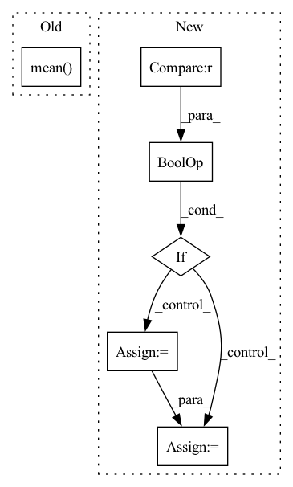

Pattern ID :17830

Before Change
- torch.sum(self.log_scale + 0.5 * torch.pow((z - self.loc) / torch.exp(self.log_scale), 2), 1)
acc = self.a(z)
if self.Z == None:
self.Z = torch.mean(acc).detach()
alpha = (1 - self.Z) ** (self.T - 1)
log_p = torch.log((1 - alpha) * acc[:, 0] / self.Z + alpha) + log_p_gauss
return z, log_p
After Change
log_p_gauss = - 0.5 * self.d * np.log(2 * np.pi) \
- torch.sum(self.log_scale + 0.5 * torch.pow((z - self.loc) / torch.exp(self.log_scale), 2), 1)
acc = self.a(z)
if self.training or self.Z == None:
Z_batch = Z_batch / n
if self.Z == None:
self.Z = Z_batch
else:
self.Z = ((1 - self.eps) * self.Z + self.eps * Z_batch).detach()
self.Z = Z_batch - Z_batch.detach() + self.Z
alpha = (1 - self.Z) ** (self.T - 1)
log_p = torch.log((1 - alpha) * acc[:, 0] / self.Z + alpha) + log_p_gauss
return z, log_p
In pattern: SUPERPATTERN
Frequency: 3
Non-data size: 6
Instances
Fragment ID: 58560735
Project Name: vincentstimper/normalizing-flows
Commit Name: 9aff267fc03712f6c0b102df9c74b34fa1301015
Time: 2020-08-13
Author: vincent.stimper@gmail.com
File Name: normflow/distributions.py
M Class Name: ResampledGaussian
N Class Name: ResampledGaussian
M Method Name: forward(2)
N Method Name: forward(2)
M Parent Class: BaseDistribution
N Parent Class: BaseDistribution
M File Name: normflow/distributions.py
N File Name: normflow/distributions.py
M Start Line: 109
M End Line: 112
N Start Line: 91
N End Line: 122
'>
Before Change
.map_x_to_distribution(torch.tensor([initial_mean, initial_shape]))\
.sample_n(n)
mean = target.mean()
assert torch.isclose(torch.as_tensor(initial_mean), mean, atol=0.01, rtol=0.01)
After Change
parameters = torch.stack([normalized_target, 1.0 * torch.ones_like(normalized_target)], dim=-1)
loss = BetaDistributionLoss()
if transformation not in ["logit"] or not center:
with pytest.raises(AssertionError):
loss.rescale_parameters(parameters, target_scale=target_scale, encoder=normalizer)
else:
rescaled_parameters = loss.rescale_parameters(parameters, target_scale=target_scale, encoder=normalizer)
samples = loss.sample_n(rescaled_parameters, 1)
assert torch.isclose(torch.as_tensor(initial_mean), samples.mean(), atol=0.01, rtol=0.01) // mean=0.1
assert torch.isclose(target.std(), samples.std(), atol=0.02, rtol=0.3) // std=0.09
'>
Fragment ID: 58560703
Project Name: jdb78/pytorch-forecasting
Commit Name: 9c4d0680c3c93c56fdbf631d7331c819c4881927
Time: 2020-12-02
Author: beitner.jan@bcg.com
File Name: tests/test_metrics.py
M Class Name: AnonimousClass
N Class Name: AnonimousClass
M Method Name: test_BetaDistributionLoss(2)
N Method Name: test_BetaDistributionLoss(0)
M Parent Class:
N Parent Class:
M File Name: tests/test_metrics.py
N File Name: tests/test_metrics.py
M Start Line: 166
M End Line: 171
N Start Line: 166
N End Line: 184
'>
Before Change
def generate_order(stock: str, start_idx: int, end_idx: int) -> None:
df = pd.read_pickle(DATA_PATH / f"{stock}.pkl")
df = df.groupby("date").take(range(start_idx, end_idx)).droplevel(level=0)
div = df["$volume0"].rolling((end_idx - start_idx) * 60).mean().shift(1).groupby(level="date").transform("first")
order_all = pd.DataFrame(df.groupby(level=(2, 0)).mean().dropna())
order_all["amount"] = np.random.lognormal(-3.28, 1.14) * order_all["$volume0"]
After Change
def generate_order(stock: str, start_idx: int, end_idx: int) -> bool:
dataset = pd.read_pickle(DATA_PATH / f"{stock}.pkl")
df = dataset.handler.fetch(level=None).reset_index()
if len(df) == 0 or df.isnull().values.any() or min(df["$volume0"]) < 1e-5:
return False
df["date"] = df["datetime"].dt.date.astype("datetime64")
df = df.set_index(["instrument", "datetime", "date"])
df = df.groupby("date").take(range(start_idx, end_idx)).droplevel(level=0)
order_all = pd.DataFrame(df.groupby(level=(2, 0)).mean().dropna())
'>
Fragment ID: 58560728
Project Name: microsoft/qlib
Commit Name: 7f1e8c52063e92cfcd11228255c2a0cb44798a90
Time: 2023-04-26
Author: huoranli@microsoft.com
File Name: examples/rl_order_execution/scripts/gen_training_orders.py
M Class Name: AnonimousClass
N Class Name: AnonimousClass
M Method Name: generate_order(3)
N Method Name: generate_order(3)
M Parent Class:
N Parent Class:
M File Name: examples/rl_order_execution/scripts/gen_training_orders.py
N File Name: examples/rl_order_execution/scripts/gen_training_orders.py
M Start Line: 15
M End Line: 17
N Start Line: 15
N End Line: 40